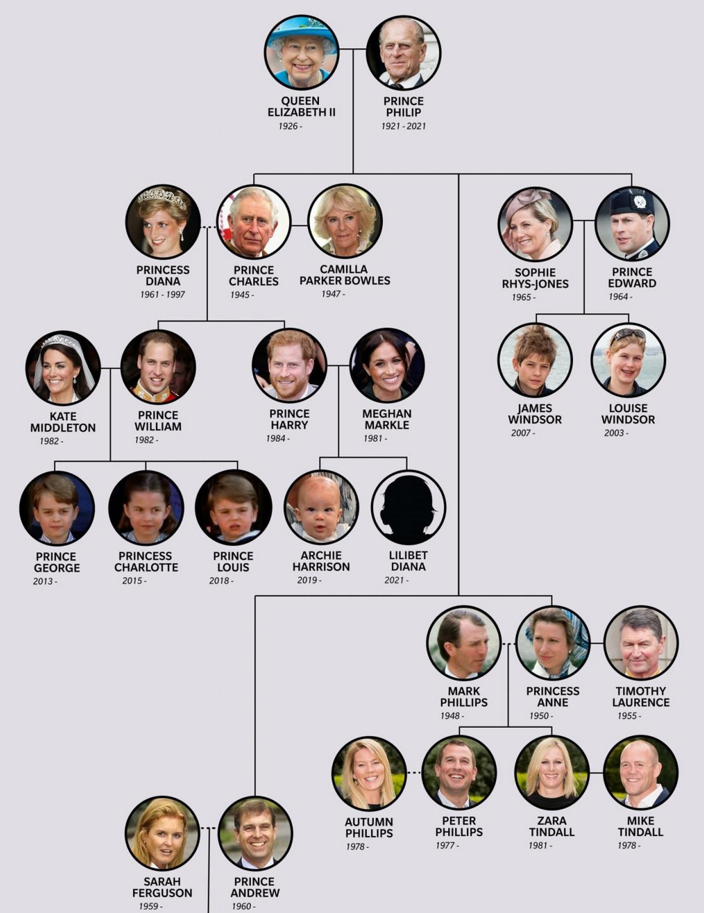
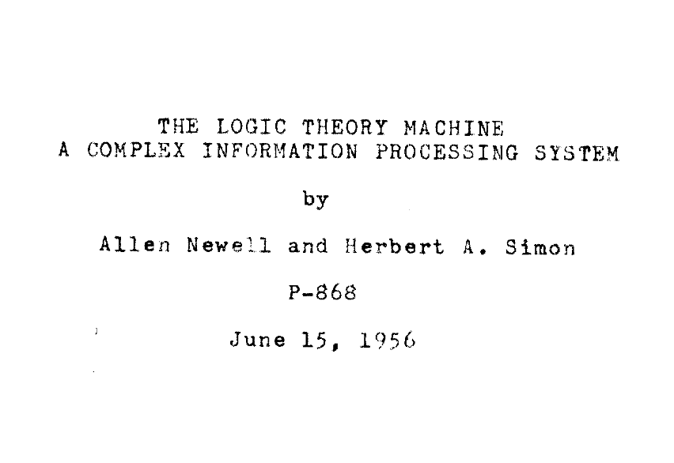
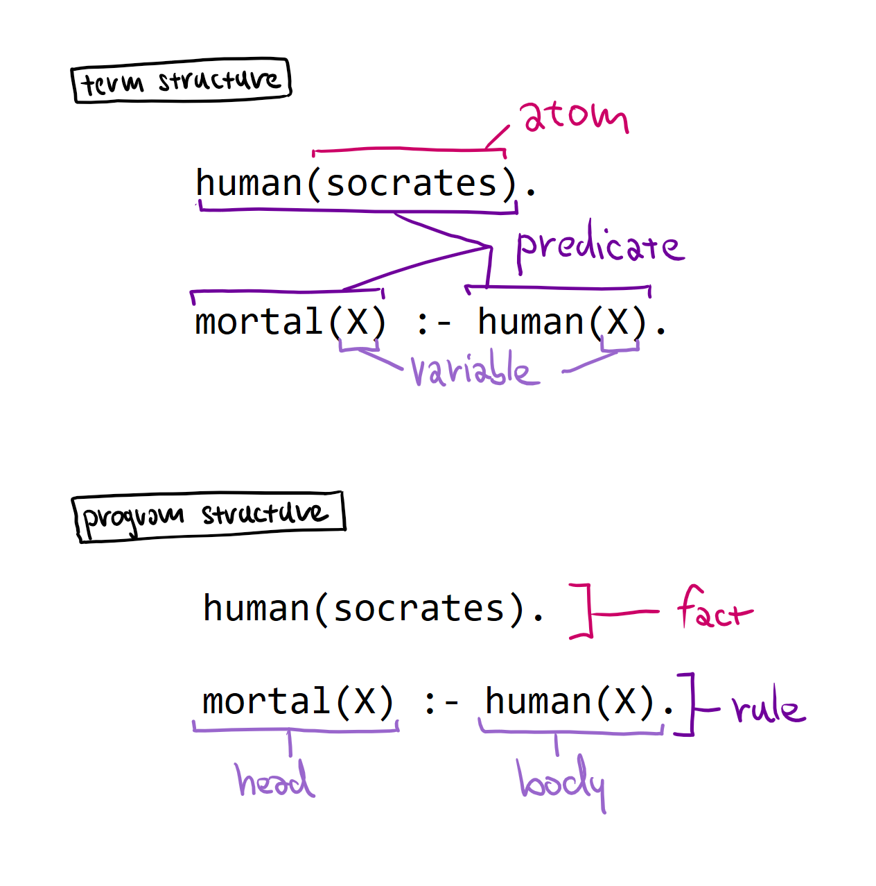
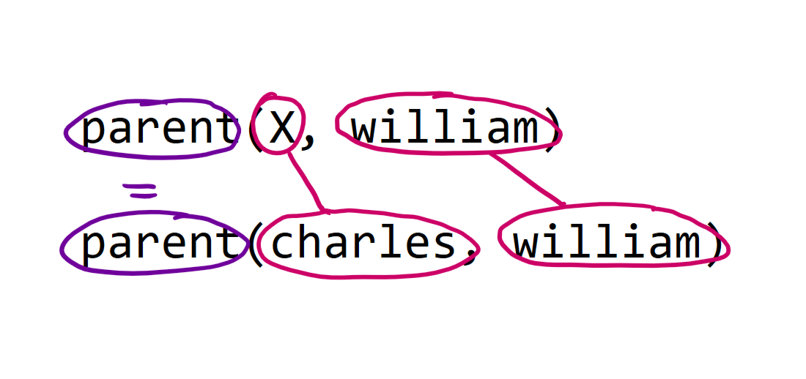

NPRG077
TinyProlog: Tiny declarative logic programming language
Tomáš Petříček, 309 (3rd floor)
petricek@d3s.mff.cuni.cz
https://tomasp.net | @tomaspetricek
https://d3s.mff.cuni.cz/teaching/nprg077


Logic programming
- Declarative style - specify what, but not how
- Programs consists of facts and rules
- Evaluation by clever inference engine
- Prolog, Datalog and basis of other systems
- Origins in AI and natural language
From inference to programming
Type inference
- Program analysis
- Generated constraints
- Unification of types
- Infer type assignment
- Unification + substitution
Logic programming
- Program evaluation
- Handwritten programs
- Unification of terms
- Infer variable assignment
- Unification + substitution

A bit of history
Natural language processing in the late 1960s & early 1970s
SHRDLU, PLANNER
"Find a block which is taller than the one you are holding and put it into the box."
Prolog then and now

Alain Colmerauer, Marseilles (1972)
- Natural language processing
- Automatic theorem proving
Fifth generation systems (1980s)
- 10 year initiative in Japan
- Epoch-making knowledge processing
Prolog (and Datalog) today
- Used in real-world in specialized domains
- Basic of many reasoning & solving systems
TinyProlog
Logic programming by example
Prolog "Hello world"
Family tree querying
- Simple database querying
- Search for data patterns
-
Grandparent (parent of a parent)
Father (parent who is male)
List processing
- Linked lists with "cons" and "nil"
- Matching lists with patterns
- Many functions become multi-purpose
Demo
Family tree and lists

Magic squares
Naive method
Generate & test
all permutations
Better approaches
Try adding only reasonable options
Naive is fine for us!
Demo
Generating magic squares
TinyProlog
A bit of theory
Model of knowledge

Closed world assumption
- Only declared facts are true
- No unknown children exist!
- Shapes the semantics of Prolog
Negation in Prolog
- Yes means provably true
- No means not provably true
- False only in a closed world
Theory behind resolution
Prolog programs as logic clauses
- Horn clause: \(A \leftarrow B_1 \wedge B_2 \wedge \ldots \wedge B_n\)
- Equivalent: \(A \vee \neg B_1 \vee \neg B_2 \vee \ldots \vee \neg B_n\)
SLD resolution in Prolog
-
Sound and refutation-complete
resolution for Horn clauses - Will prove 'false' if possible
Variables in Prolog clauses
Universally quantified over formula, existentially over body
\(\forall x \forall y (grandparent(x, y) \leftarrow \exists z (parent(x, z) \wedge parent(z, y)))\)
Transformed using standard logical operations
\(\forall x \forall y (grandparent(x, y) \vee \neg \exists z (parent(x, z) \wedge parent(z, y)))\) \(\forall x \forall y (grandparent(x, y) \vee \forall z \neg (parent(x, z) \wedge parent(z, y)))\) \(\forall x \forall y \forall z (grandparent(x, y) \vee \neg parent(x, z) \vee \neg parent(z, y))\)
We need to use free variables when applying rule!
Numbers
Calculating inside Prolog
- Peano arithmetic encoded as zero & successor
- Constraint Logic Programming (CLP) extensions
- CLP(Z) adds a specialized solver for integers
- CLP(B), CLP(Q), CLP(R) and more
Cyclic terms and occurs check

Occurs check
- Avoid terms of the form
A = f(A) - Supports rational trees (cyclic terms)
- Not checking is faster, but not right
Practical Prolog
-
Some operations can fail:
A = 1 + A, B is A. -
Checks can be turned on:
set_prolog_flag(occurs_check, true).`
Demo
Enabling occurs check
TinyProlog
Implementation structure

TinyProlog programs
Program is a list of clauses which are:
1) Rules (head + body) 2) Facts (head)
A term can be:
1) Variable
2) Atom
3) Predicate
(* Recursive term definition *)
type Term =
| Atom of string
| Variable of string
| Predicate of
string * Term list
| Call of Term * Term list
(* Facts have empty Body *)
type Clause =
{ Head : Term
Body : Term list }
(* Create a fact clause *)
let fact p =
{ Head = p; Body = [] }
(* Create a rule clause *)
let rule p b =
{ Head = p; Body = b }
TinyProlog programs
Encoded as F# types!
Atom vs. variable
Atom is a single data item, thing that exists.
Variable is a placeholder that we want to assign a term to.
Prolog resolution logic
-
Start with user query as the goal
Single (or multiple) term(s) with unbound variables -
Find applicable rule/fact by matching its head
Unification to check if the rule can be applied -
Generate substitution from the matching
Substitution generated by unification process -
Add goals based on the rule body
Apply substitution and repeat until all goals solved
The unification process
Tiny implementation
- Similar to our type inference code!
unifyandunifyListsfunctions- Generate substitution for variables
Used in Prolog context
- Same 2 uses of substitution
- Occurs check done optionally
-
Use fresh set of variables when
reusing rules from program database!
let rec unifyLists l1 l2 =
match l1, l2 with
| [], [] ->
(* empty substitution*)
| h1::t1, h2::t2 ->
match unify h1 h2 with
| Some(s) -> (*
1. substitution 's' to
unify 'h1' and 'h2'
2. now unifiy 't1' and 't2'
recursively & compose
3. if not possible, fail *)
| _ -> (* fail *)
| _ -> (* fail *)
and unify t1 t2 =
match t1, t2 with
| Atom(a1), Atom(a2) -> (* does 'a1' match 'a2'? *)
| Variable(v), t | t, Variable(v) ->
(* return a substitution *)
| Predicate(p1, args1), Predicate(p2, args2) ->
(* if p1 = p2, unify arguments recursively *)
| _ -> None
Unification logic
Split into two functions for better readability
unify matches terms
unifyLists matches two lists using unify
% Number: 0
zero
% Number: 1
one = s(zero)
% Number: 5
five = s(s(s(s(s(zero)))))
% Empty list
empty
% List [1]
cons(one, empty)
% List [1; 5]
cons(one, cons(five, empty))
Adding support for numbers and lists
Nothing extra is needed!
Good enough for a tiny implementation.
Terribly inefficient and limited if you want to calculate anything!
The F# language
Useful advanced features
Advanced F# features

Active patterns
- Custom patterns for use in
match - Match number with
OddorEven - Recognize special forms of terms
- Complete or partial patterns
Sequence expressions
- Write code that generates a sequence of items
- Comprehensions (Haskell), generators (JS), ...
- Lazy
seq {..}or eager[..]or arrays[|..|]
Demo
Advanced F# features
Lab overview
TinyProlog system step-by-step
TinyProlog - Basic tasks
-
Implementing basic unification of terms
Recursively match atoms, variables and predicates -
Composing and applying substitutions
To handle multiple occurrences of a variable correctly -
Searching clauses & variable renaming
Find applicable rules and relevant facts in program -
Generating and proving goals recursively
The key trick! Generate and solve goals in a loop -
Adding numbers to TinyProlog
Representing, calculating and pretty printing
TinyProlog - Bonus and super tasks
-
Lazy search and support for lists
Refactoring for readability and more pretty printing -
Generating magic squares in TinyProlog
In which we find out how slow our implementation is :-) -
Implementing call and functional maplist
Adding special predicate for higher-order programming -
Adding support for occurs checks
If you want to make it slower and more correct -
Implementing Prolog-style cut operator
Super-bonus if you are into Prolog programming...
Closing
A tiny logic programming language
Conclusions
A tiny declarative logic programming language
- Remarkably similar to ML type inference!
- This is not a coincidence...
- Evaluation as search, not a sequence of steps
- Much work needed to make this practical
Tomáš Petříček, 309 (3rd floor)
petricek@d3s.mff.cuni.cz
https://tomasp.net | @tomaspetricek
https://d3s.mff.cuni.cz/teaching/nprg077
http://alain.colmerauer.free.fr/alcol/ArchivesPublications/PrologHistory/19november92.pdf
https://www.metalevel.at/prolog/clpz
https://github.com/Naereen/Tiny-Prolog-in-OCaml/
https://yanniss.github.io/next-paradigm-onward19.pdf
https://tgifernando.files.wordpress.com/2013/01/sld_resolution-4spp.pdf